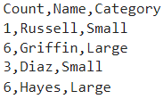
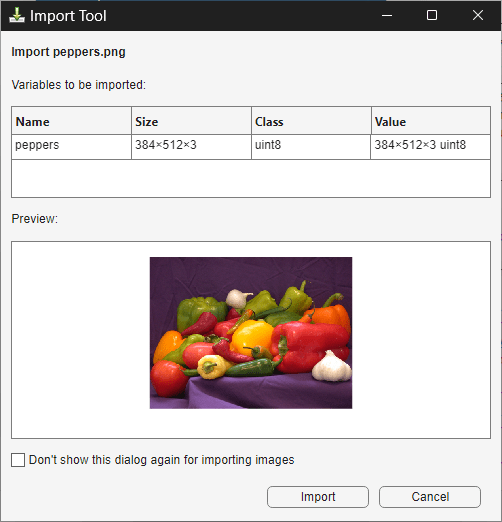
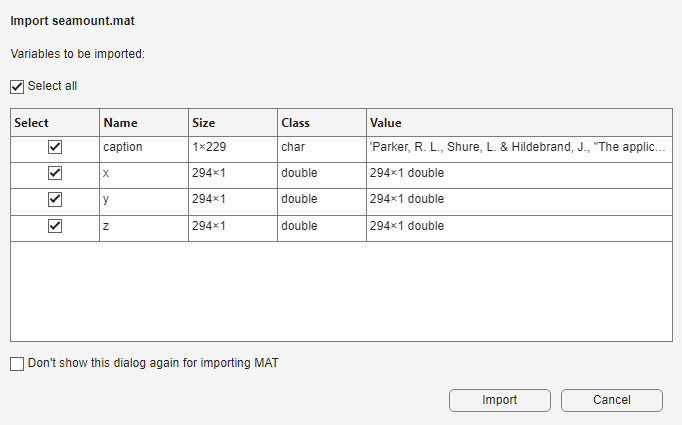

Import Tool
Import data from file
Description
The Import Tool lets you interactively select and import MAT, text, spreadsheet, media (image, audio, and video), and scientific data (HDF5 and netCDF) files. You can also generate MATLAB® code to import similar files.
Open the Import Tool
MATLAB Toolstrip: On the Home tab, in the Variable section, click Import Data.
MATLAB command prompt: Enter
uiimportoruiimport(filename), wherefilenameis a string scalar or character vector specifying the name of a file.
Examples
Interactively import the data from a text or spreadsheet file as a table using the Import Tool.
The Import Tool automatically detects details about the data to be imported. You can adjust these fields to customize the import options. Then, click the Import Selection button. The new table appears in your workspace.
For example, import the data in the text file textdata.txt as a
table.

The Import Tool recognizes that the column delimiters are commas, the first row contains variable names, and the columns have numeric, text, and categorical types.
uiimport("textdata.txt")
Interactively import the image data from a graphics file as an array using the Import Tool.
The Import Tool displays the name, size, class, and value fields and a preview of the image data to import. Then, to import the image data, click Import. The array appears in your workspace.
For example, import the data in the image file
peppers.png.
uiimport("peppers.png")
Interactively import the variables in a MAT file using the Import Tool.
The Import Tool displays the variables in the MAT file. Select the Select all check box to import all three variables in the MAT file. Alternatively, to import only a subset of the variables in the MAT file, select the check boxes in the table for the variables to import. Then, to import the variables, click Import. The variables appear in your workspace.
For example, import the variables in the MAT file
seamount.mat.
uiimport("seamount.mat")
Interactively import data into fields of a scalar structure using the Import Tool.
By default, the Import Tool imports data as individual variables. Instead, to import
data into the fields of a structure, open the Import Tool by specifying an output
argument for the uiimport function. Then, to create the structure,
click Import. The structure appears in your workspace.
For example, import the x, y, and
z variables in the MAT file seamount.mat as
fields in a scalar
structure.
S = uiimport("seamount.mat")S =
struct with fields:
x: [294×1 double]
y: [294×1 double]
z: [294×1 double]
Import spreadsheet data from the clipboard using the Import Tool.
In addition to importing spreadsheet data from a file, you can also import
spreadsheet data form the clipboard. First, select and copy your spreadsheet data. Then,
open the Import Tool for the data on the clipboard by specifying the
pastespecial option for the uiimport
function.
uiimport -pastespecialInteractively generate a function using the Import Tool to import data from multiple text files.
When you import data from a file using the Import Tool you can generate a function that represents the import operation. You can call the function to import data from other files. For example, import a data from a set of text files.
First, open the Import Tool and choose one text file to import from the file selector. Next, click Import Selection > Generate Function. The Import Tool generates a function similar to this excerpt and opens the function in the Editor.
function textdata = importfile(filename,dataLines) %IMPORTFILE Import data from a text file ...
Save the function. Then, you can call the function to import data from a similar file. For example, create a cell array containing data from similar text files.
numFiles = 25; startRow = 2; endRow = inf; myData = cell(1,numFiles); for fileNum = 1:numFiles fileName = sprintf('myfile%02d.txt',fileNum); myData{fileNum} = importfile(fileName,startRow,endRow); end
Note
For some file types, such as image, audio, and video files, code for the import operation is automatically generated in the Command Window.
Related Examples
Programmatic Use
Limitations
The Import Tool does not support importing data from HDF5 files that use the Family driver, the Multi driver, or the Split driver. To import data from a file that uses one of these three drivers, use either the MATLAB high-level HDF5 functions (for example,
h5readorh5readatt) or the MATLAB low-level HDF5 functions.
Tips
To interactively select and import a file within a function, use the
uiimportfunction with an output argument to open the Import Tool. This imports the data into the function workspace, rather than importing the data into the base workspace.